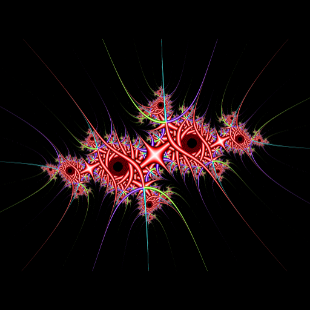

Orbit trapped Julia fractal
Given a complex number \(z_c\), called the Julia point, the corresponding Julia fractal is obtained by iterating \(z \mapsto z^2 + z_c\) for each complex number \(z\) until the modulus of \(z\) exceeds a certain threshold or the maximal number of iterations is attained. Then a color is assigned to \(z\).
An orbit trapped Julia fractal is obtained in the same way, but the iteration is stopped whenever \(z\) is close enough to a given set such as a square or a circle. In the example shown below, we take the two axes as this trapping set.
I also add something: instead of looking at the distance between \(z\) and the two axes, I look at the distance between \(z\) and the axes after having rotated \(z\) by an angle \(\alpha\). Then I’ll vary \(\alpha\) to get an animation.
So here is the code of this algorithm; the color assigned to the final \(z\) is defined in function of the value of the trapping function (the distance):
# trapping function:
# distance (up to factor 1/0.03) between alpha-rotated z and axes
f <- function(z, alpha) {
z <- z * exp(1i*alpha)
min(abs(Re(z)), abs(Im(z))) / 0.03
}
# choose the Julia point
juliaPoint <- complex(real = -0.687, imaginary = 0.299015)
# main function
Julia <- Vectorize(function(x, y, juliaPoint, alpha) {
# counter
i <- 0L
# current point, to be iterated
z <- complex(real = x, imaginary = y)
# iterations
while(i < 100L && Mod(z) < 100 && (i < 2L || f(z, alpha) > 1)) {
z <- z^2 + juliaPoint
i <- i + 1L
}
# now assign a color to the resulting z
fz <- 2 * f(z, alpha)
hsv( # h, s, v must be in (0, 1)
h = (Arg(z) + pi) / (2 * pi),
s = min(1, fz),
v = max(0, min(1, 2 - fz))
)
})The condition i < 2L ensures that the iteration is not stopped at the beginning. Let’s plot a first image:
# run the orbit trapping of Julia
n <- 2048L
x_ <- seq(-2, 2, length.out = n)
y_ <- seq(-1.5, 1.5, length.out = n)
img <- t(outer(x_, y_, Julia, juliaPoint = juliaPoint, alpha = 0))
# plot
opar <- par(mar = c(0, 0, 0, 0), bg = "black")
plot(c(-100, 100), c(-100, 100), type = "n", asp = 3/4,
xlab = NA, ylab = NA, axes = FALSE, xaxs = "i", yaxs = "i")
rasterImage(img, -100, -100, 100, 100)
par(opar)
And here is the animation obtained by varying the angle \(\alpha\):

Such a fractal is easily and efficiently rendered as a shader. Click here to play with the shader, in which the cursor of the mouse is used to take the Julia point. I also modified the trapping function (\(z^3\) instead of \(z\)).